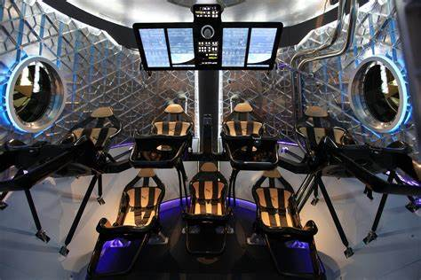

- Rocket Propulsion:
Rockets are the primary means of launching spacecraft into space. Advanced
rocket propulsion technologies, such as chemical, nuclear, and ion propulsion, are used to achieve
the high velocities needed for space travel.
Rocket propulsion engines are the heart of any spacecraft, propelling them
through the vacuum of space by expelling mass at high speeds in the opposite direction, following
Newton's third law of motion: for every action, there is an equal and opposite reaction. Here's a
brief explanation of how rocket propulsion engines work
Click to know more
- Spacecraft Design:
Rockets are the primary means of launching spacecraft into space. Advanced rocket
propulsion technologies, such as chemical, nuclear, and ion propulsion, are used to achieve the high
velocities needed for space travel.
click to know more
- Autonomous Systems:
Autonomous systems are computer-controlled systems that can operate without
human
intervention. They are used in spacecraft to perform a variety of tasks, such as navigation,
docking,
and landing.

Click
to know more
- Findind Efficient Routes
Spacecraft must travel long distances to reach their destinations, and the
shortest
route is not always the most efficient. Advanced navigation systems are used to find the most
efficient
routes for spacecraft to travel.Another was “wormholes” — bridges connecting different points in spacetime, in theory providing shortcuts for space travellers.
How we are going to travel through wormholes
Click
to know more